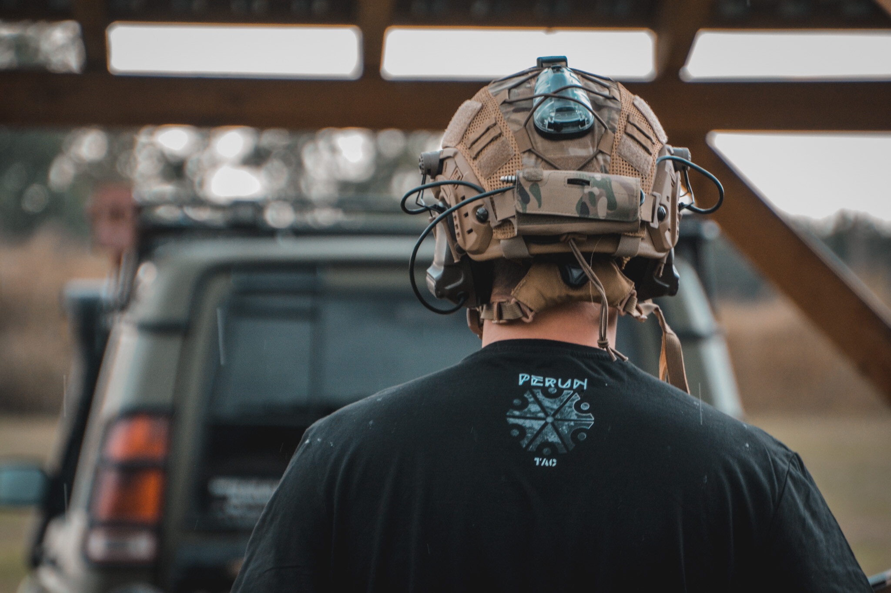
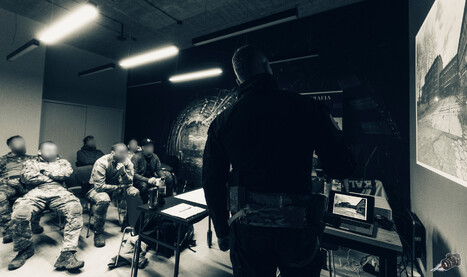
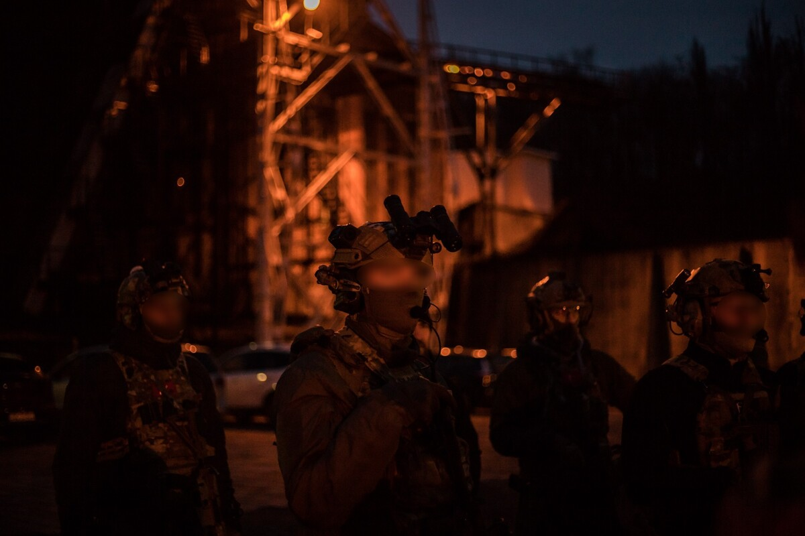
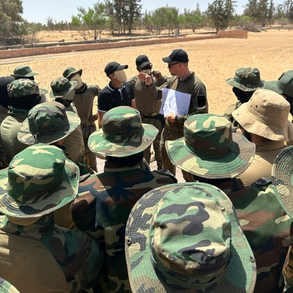
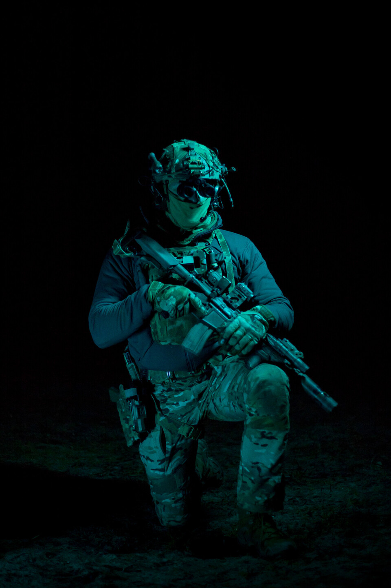
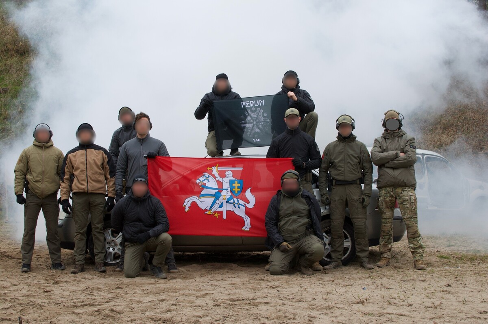
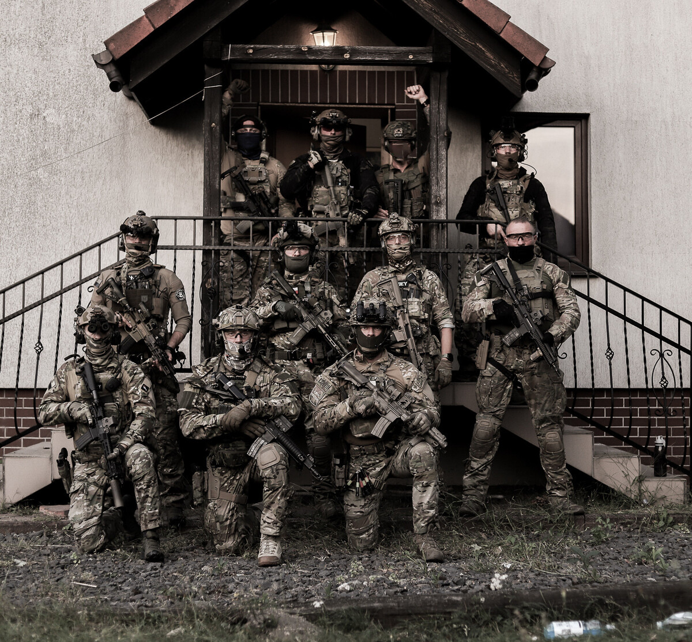

PERUN TAC // O NAS
Kim jesteśmy.
Perun Tac powstało w 2020 roku jako odpowiedź na realną potrzebę rzetelnej, merytorycznej i praktycznej przestrzeni szkoleniowej w obszarze bezpieczeństwa i obronności.
Nie oferujemy „zabawy w komandosów”.
Naszą misją jest dostarczanie wiedzy i umiejętności opartych na doświadczeniu zdobywanym w środowiskach operacyjnych, pracy w zespołach bojowych i ochronnych oraz współpracy z różnymi formacjami mundurowymi i wojskowymi.
Zamiast szkoleń bez wartości dostajesz u nas profesjonalne kursy prowadzone przez ekspertów, w których każdy element, od podstaw obsługi broni, przez taktykę małych zespołów, po zaawansowane kursy specjalistyczne, ma realne zastosowanie w rzeczywistych warunkach.
Firmę tworzą osoby wywodzące się z różnych sektorów bezpieczeństwa, z wieloletnim doświadczeniem z misji na terenie Polski i poza jej granicami. Zespół instruktorów to profesjonaliści, którzy swoje doświadczenie zdobywali w jednostkach wojska, policji, służbach specjalnych i sektorze prywatnym.



Doświadczenie z realnych operacji.
Związany z sektorem bezpieczeństwa od 2014 roku. Wieloletnia obserwacja potrzeb rynku oraz ewoluujących zagrożeń na arenie międzynarodowej popchnęła go do stworzenia firmy oferującej kompleksowe usługi szkoleniowe na każdym poziomie zaawansowania.
Posiada bogate doświadczenie instruktorskie w zakresie szkoleń taktycznych i strzeleckich. Realizował zadania operacyjne na Bliskim Wschodzie, w północnej Afryce oraz w Ukrainie.
Doświadczenie to jedno. Sposób przekazania wiedzy to drugie.
Program każdego szkolenia jest opracowany z myślą o przekazywaniu usystematyzowanej wiedzy. Zawdzięczamy to autorskiemu systemowi nauczania, dzięki któremu rozwijasz swoje umiejętności znacznie szybciej.
Jeśli oczekujesz wysokiego poziomu merytorycznego, dbałości o detale oraz treningu, który faktycznie rozwija kompetencje niezbędne w sytuacjach kryzysowych, jesteś we właściwym miejscu.



